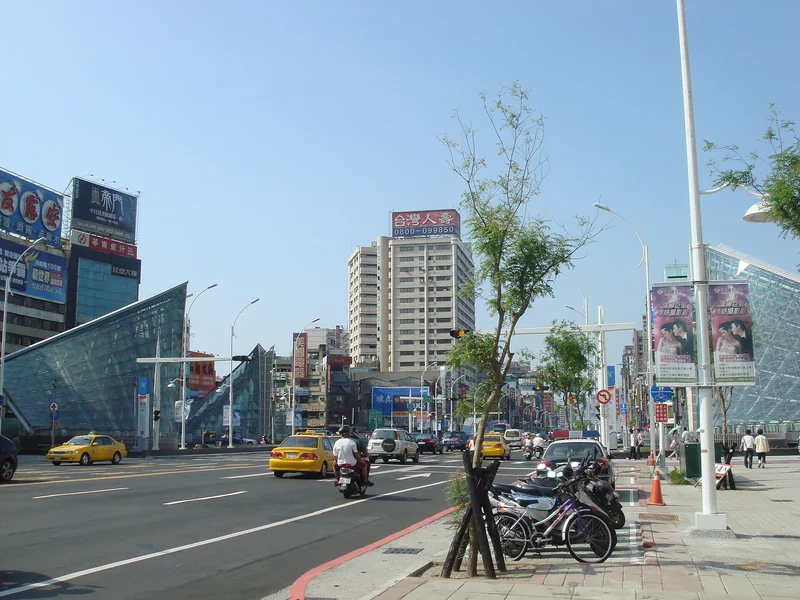
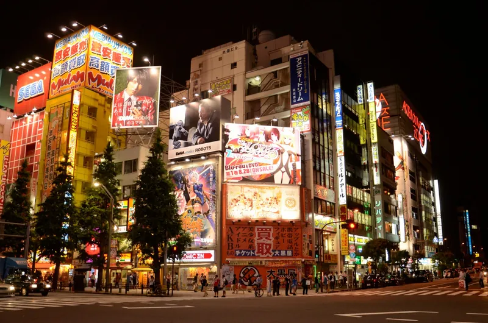
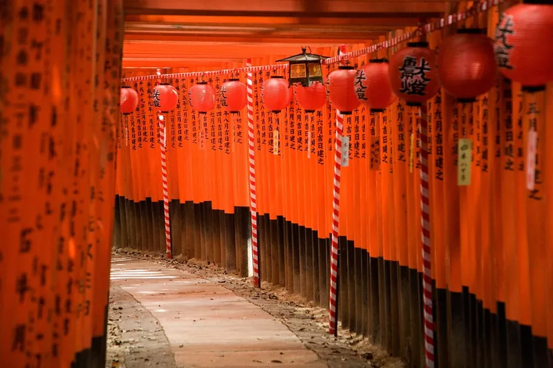
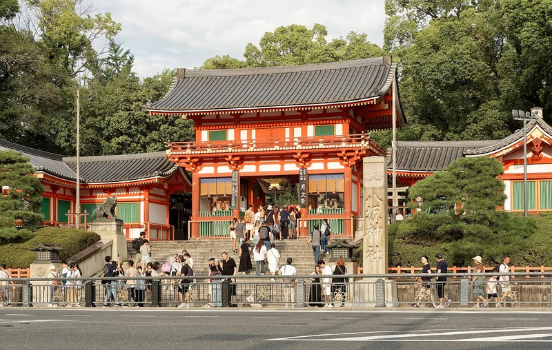
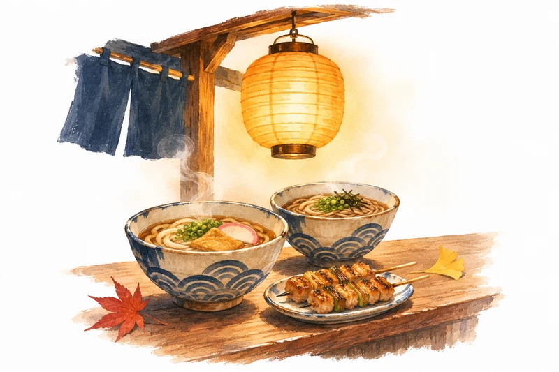
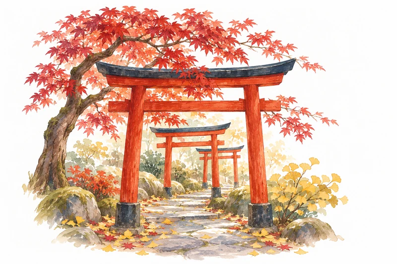

Pictures, words and how this guide was made
Credits
Thank you to the photographers whose openly licensed work shows the places we’re visiting.
Photographs
Sixteen reference photographs from Wikimedia Commons, each under the licence shown. They show the places, not our family, and appearance, foliage or signage may differ today. This page doesn’t relicense them.

Formosa Boulevard station, KaohsiungKMRT Formosa Boulevard Station 01.jpg by Anav Rin Source on Wikimedia Commons · Licence: CC BY 2.0 Captured 2008-08-30 15:07:59. Resized, converted to WebP, EXIF orientation applied; may be shown cropped on the page. No scene manipulation. A reference photograph — not taken on this trip. Narita Airport Terminal 2Narita Airport Terminal 2 exterior.jpg by Banbam1029
Source on Wikimedia Commons · Licence: CC BY-SA 4.0
Captured 2020-04-06 15:34:03. Resized, converted to WebP, EXIF orientation applied; may be shown cropped on the page. No scene manipulation. ShareAlike: adaptations of this photo must use the same licence. A reference photograph — not taken on this trip.
Narita Airport Terminal 2Narita Airport Terminal 2 exterior.jpg by Banbam1029
Source on Wikimedia Commons · Licence: CC BY-SA 4.0
Captured 2020-04-06 15:34:03. Resized, converted to WebP, EXIF orientation applied; may be shown cropped on the page. No scene manipulation. ShareAlike: adaptations of this photo must use the same licence. A reference photograph — not taken on this trip. Kaminarimon, the gate to SensojiKaminarimon Gate of Sensoji Temple.JPG by そらみみ (Soramimi)
Source on Wikimedia Commons · Licence: CC BY-SA 4.0
Captured 2015-09-15 11:51:56. Resized, converted to WebP, EXIF orientation applied; may be shown cropped on the page. No scene manipulation. ShareAlike: adaptations of this photo must use the same licence. A reference photograph — not taken on this trip.
Kaminarimon, the gate to SensojiKaminarimon Gate of Sensoji Temple.JPG by そらみみ (Soramimi)
Source on Wikimedia Commons · Licence: CC BY-SA 4.0
Captured 2015-09-15 11:51:56. Resized, converted to WebP, EXIF orientation applied; may be shown cropped on the page. No scene manipulation. ShareAlike: adaptations of this photo must use the same licence. A reference photograph — not taken on this trip. Shibuya Crossing2024 Shibuya Crossing.jpg by Kakidai
Source on Wikimedia Commons · Licence: CC BY-SA 4.0
Captured 2024-11. Resized, converted to WebP, EXIF orientation applied; may be shown cropped on the page. No scene manipulation. ShareAlike: adaptations of this photo must use the same licence. A reference photograph — not taken on this trip.
Shibuya Crossing2024 Shibuya Crossing.jpg by Kakidai
Source on Wikimedia Commons · Licence: CC BY-SA 4.0
Captured 2024-11. Resized, converted to WebP, EXIF orientation applied; may be shown cropped on the page. No scene manipulation. ShareAlike: adaptations of this photo must use the same licence. A reference photograph — not taken on this trip. Nakano Broadway (Sun Mall approach)Nakano Broadway (53147759758).jpg by Dick Thomas Johnson from Tokyo, Japan
Source on Wikimedia Commons · Licence: CC BY 2.0
Captured 2023-07-01 14:17. Cropped from 2:3 to 3:4, resized and converted to WebP; may be shown cropped on the page. No scene manipulation. A reference photograph — not taken on this trip.
Nakano Broadway (Sun Mall approach)Nakano Broadway (53147759758).jpg by Dick Thomas Johnson from Tokyo, Japan
Source on Wikimedia Commons · Licence: CC BY 2.0
Captured 2023-07-01 14:17. Cropped from 2:3 to 3:4, resized and converted to WebP; may be shown cropped on the page. No scene manipulation. A reference photograph — not taken on this trip.
Akihabara Electric Town at nightNight in Akihabara 2015-07-05.jpg by Stephen Kelly Source on Wikimedia Commons · Licence: CC BY 2.0 Captured 2015-07-05. Resized and converted to WebP; may be shown cropped on the page. No scene manipulation. A reference photograph — not taken on this trip. Osaka Castle keepOsaka-jo Castle Evening 2024-07.jpg by Mr.ちゅらさん
Source on Wikimedia Commons · Licence: CC0
Captured 2024-07-12 19:23:14. Resized, converted to WebP, EXIF orientation applied; may be shown cropped on the page. No scene manipulation. A reference photograph — not taken on this trip.
Osaka Castle keepOsaka-jo Castle Evening 2024-07.jpg by Mr.ちゅらさん
Source on Wikimedia Commons · Licence: CC0
Captured 2024-07-12 19:23:14. Resized, converted to WebP, EXIF orientation applied; may be shown cropped on the page. No scene manipulation. A reference photograph — not taken on this trip. Ebisubashi and the Glico sign, DotonboriGlico Man Neon Sign and Ebisubashi Bridge at night.jpg by そらみみ
Source on Wikimedia Commons · Licence: CC BY-SA 4.0
Captured Taken on 1 February 2019, 20:48:41. Resized, converted to WebP, EXIF orientation applied; may be shown cropped on the page. No scene manipulation. ShareAlike: adaptations of this photo must use the same licence. A reference photograph — not taken on this trip.
Ebisubashi and the Glico sign, DotonboriGlico Man Neon Sign and Ebisubashi Bridge at night.jpg by そらみみ
Source on Wikimedia Commons · Licence: CC BY-SA 4.0
Captured Taken on 1 February 2019, 20:48:41. Resized, converted to WebP, EXIF orientation applied; may be shown cropped on the page. No scene manipulation. ShareAlike: adaptations of this photo must use the same licence. A reference photograph — not taken on this trip.
Torii tunnel, Fushimi InariFushimi Inaritaisya 伏見稻荷大社 (KYOTO-JAPAN) (4950799265).jpg by Chi King Source on Wikimedia Commons · Licence: CC BY 2.0 Captured 2010-07-24. Cropped slightly to 3:2, resized and converted to WebP; may be shown cropped on the page. No scene manipulation. A reference photograph — not taken on this trip.
West gate, Yasaka ShrineNishiromon Gate, Yasaka Shrine, Kyoto, 20240820 1721 5183.jpg by Jakub Hałun Source on Wikimedia Commons · Licence: CC BY 4.0 Captured 2024-08-20 17:21:55. Resized, converted to WebP, EXIF orientation applied; may be shown cropped on the page. No scene manipulation. A reference photograph — not taken on this trip. Deer in Nara ParkAutumn deer (52541974760).jpg by Raita Futo from Tokyo, Japan
Source on Wikimedia Commons · Licence: CC BY 2.0
Captured 2022-11-22 15:29. Resized, converted to WebP, EXIF orientation applied; may be shown cropped on the page. No scene manipulation. A reference photograph — not taken on this trip.
Deer in Nara ParkAutumn deer (52541974760).jpg by Raita Futo from Tokyo, Japan
Source on Wikimedia Commons · Licence: CC BY 2.0
Captured 2022-11-22 15:29. Resized, converted to WebP, EXIF orientation applied; may be shown cropped on the page. No scene manipulation. A reference photograph — not taken on this trip. Great Buddha Hall, TodaijiDaibutsu-den in Todaiji Nara01bs3200.jpg by 663highland
Source on Wikimedia Commons · Licence: CC BY 2.5
Captured 2008-07-12. Resized, converted to WebP, EXIF orientation applied; may be shown cropped on the page. No scene manipulation. A reference photograph — not taken on this trip.
Great Buddha Hall, TodaijiDaibutsu-den in Todaiji Nara01bs3200.jpg by 663highland
Source on Wikimedia Commons · Licence: CC BY 2.5
Captured 2008-07-12. Resized, converted to WebP, EXIF orientation applied; may be shown cropped on the page. No scene manipulation. A reference photograph — not taken on this trip. Liuhe Night Market, KaohsiungKaohsiung- Liuhe Night Market - 六合夜市 (2026) - img 03.jpg by Chainwit.
Source on Wikimedia Commons · Licence: CC BY 4.0
Captured 2026-01-17 18:06:02. Resized, converted to WebP, EXIF orientation applied; may be shown cropped on the page. No scene manipulation. A reference photograph — not taken on this trip.
Liuhe Night Market, KaohsiungKaohsiung- Liuhe Night Market - 六合夜市 (2026) - img 03.jpg by Chainwit.
Source on Wikimedia Commons · Licence: CC BY 4.0
Captured 2026-01-17 18:06:02. Resized, converted to WebP, EXIF orientation applied; may be shown cropped on the page. No scene manipulation. A reference photograph — not taken on this trip. Penglai warehouses, Pier-2 Art Center202407 Penglai warehouses, Pier-2 Art Center, Kaohsiung.jpg by Jonashtand
Source on Wikimedia Commons · Licence: CC BY-SA 4.0
Captured 2024-07-11 15:38:02. Resized, converted to WebP, EXIF orientation applied; may be shown cropped on the page. No scene manipulation. ShareAlike: adaptations of this photo must use the same licence. A reference photograph — not taken on this trip.
Penglai warehouses, Pier-2 Art Center202407 Penglai warehouses, Pier-2 Art Center, Kaohsiung.jpg by Jonashtand
Source on Wikimedia Commons · Licence: CC BY-SA 4.0
Captured 2024-07-11 15:38:02. Resized, converted to WebP, EXIF orientation applied; may be shown cropped on the page. No scene manipulation. ShareAlike: adaptations of this photo must use the same licence. A reference photograph — not taken on this trip. Autumn in Shinjuku GyoenAutumn leaves - Shinjuku gyoen - nov 2016.jpg by nesnad
Source on Wikimedia Commons · Licence: CC BY-SA 3.0
Captured 21 November 2016 (according to Exif data). Resized, converted to WebP, EXIF orientation applied; may be shown cropped on the page. No scene manipulation. ShareAlike: adaptations of this photo must use the same licence. A reference photograph — not taken on this trip.
Autumn in Shinjuku GyoenAutumn leaves - Shinjuku gyoen - nov 2016.jpg by nesnad
Source on Wikimedia Commons · Licence: CC BY-SA 3.0
Captured 21 November 2016 (according to Exif data). Resized, converted to WebP, EXIF orientation applied; may be shown cropped on the page. No scene manipulation. ShareAlike: adaptations of this photo must use the same licence. A reference photograph — not taken on this trip. Ikuta Shrine, KobeIkuta Shrine Mar 2025 03.jpg by Epicgenius
Source on Wikimedia Commons · Licence: CC BY-SA 4.0
Captured 2025-03-19 16:09:51. Resized, converted to WebP, EXIF orientation applied; may be shown cropped on the page. No scene manipulation. ShareAlike: adaptations of this photo must use the same licence. A reference photograph — not taken on this trip.
Ikuta Shrine, KobeIkuta Shrine Mar 2025 03.jpg by Epicgenius
Source on Wikimedia Commons · Licence: CC BY-SA 4.0
Captured 2025-03-19 16:09:51. Resized, converted to WebP, EXIF orientation applied; may be shown cropped on the page. No scene manipulation. ShareAlike: adaptations of this photo must use the same licence. A reference photograph — not taken on this trip.


.jpg){kind=link}


_(4950799265).jpg){kind=link}

.jpg){kind=link}

_-_img_03.jpg){kind=link}


Illustrations
The twenty-three painted illustrations — gouache and ink on white paper in navy, maple and ginkgo — are AI-generated conceptual illustrations, made with OpenAI’s built-in image generation tool on 3 November 2026 for this trip. They are moods, not records: they don’t show our family, a real home, an actual menu, a specific shop or a navigation route. The venue and ring additions use the earlier artwork as a style/edit reference. The original illustrations use 800 px and 1600 px WebP versions; the three additions use 800 px and native 1536 px versions. No exclusive copyright or blanket licence is claimed for them.
 A hand-painted travel journal, suitcase, tea and autumn leaves.
A hand-painted travel journal, suitcase, tea and autumn leaves. Shared Japanese lunch table with ordinary chairs, ceramics and a wrapped gift.
Shared Japanese lunch table with ordinary chairs, ceramics and a wrapped gift. Tea tray with cups, sweets, a wrapped gift and ginkgo leaf.
Tea tray with cups, sweets, a wrapped gift and ginkgo leaf. A miniature racing car, model sprue, tools and coffee.
A miniature racing car, model sprue, tools and coffee.
Taiwan night-market supper Arrival in Japan
Arrival in Japan Asakusa afternoon
Asakusa afternoon Nakano discoveries
Nakano discoveries Watch-shopping afternoon
Watch-shopping afternoon Train-window journey
Train-window journey A gentle café pause
A gentle café pause Osaka evening
Osaka evening
Kyoto autumn Nara encounter
Nara encounter Kaohsiung art walk
Kaohsiung art walk Bringing memories home
Bringing memories home Osaka Castle in autumn
Osaka Castle in autumn A Japanese lunch
A Japanese lunch Rainy-day discoveries
Rainy-day discoveries Ready for an early flight
Ready for an early flight Chinzanso garden visit
Chinzanso garden visit Wedding rings in Okachimachi
Wedding rings in Okachimachi Happo-en garden visit
Happo-en garden visit
The tax refund guide uses a separate set of sixteen painted AI-generated conceptual illustrations (revision 2, 3 November 2026), made with OpenAI’s built-in image tool from written descriptions of the family. They are approximations, not portraits; the passport covers are painted motifs, not reproductions of real documents, and no airport layout or official screen is shown. Its diagrams were drawn for this website as HTML, CSS and SVG. No exclusive copyright or blanket licence is claimed.
Infographics and icons
The day infographics, route ribbon and who-sleeps-where table were drawn for this website from the itinerary, as HTML, CSS and SVG. Route lines are schematic. The travel icons come from the trip’s original icon set, dedicated to the public domain under CC0 1.0; a few extra icons in the same style were added.
Typefaces
Young Serif (The Young Serif Project Authors), Figtree (The Figtree Project Authors) and DM Mono (The DM Mono Project Authors), all under the SIL Open Font License 1.1 and served from this site — licence text in assets/fonts/OFL-LICENSES.txt.
Tax-refund reference
The tax-refund steps are a family summary compiled from official guidance, not an official publication. Original source: Japan Tourism Agency, official tax-refund leaflet (English), mlit.go.jp/kankocho/tax-free/content/002029076.pdf, accessed 3 November 2026. The leaflet itself isn’t republished here because it contains logos and illustrated characters without document-specific reuse clearance.
About this guide
Find route details and fares in each day’s “Full plan, routes and fares” section and on the Practical page.